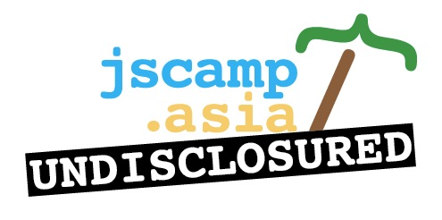

jscamp
.asia
UNDISCLOSURED
Singapore,
29th + 30th November 2012
29th + 30th November 2012
}
/
~~~~~
|

jscamp
.asia
UNDISCLOSURED
Singapore,
29th + 30th November 2012 }
/
~~~~~
|
The Facts
Drop your E-Mail and we'll remind you when tickets are available! |
f Find us on Facebook |
NUSS Kent Ridge Guild House
In the south of Singapore's National University NUS nests this modern Alumni Club. Besides flexible
conference functions it offers its members all kinds of sport facilities, restaurants and bars.
Some of those will also be available to our guests during the time of JSCamp. Just to make a great event yet a little bit better.
|
Wi-Fi, free and open
We are making a great extra effort to provide an open and free Wi-Fi internet connection capable of feeding several hundred devices. |
As long as you have a great and inspiring time, we are happy. Please do share your feedback with us. This is gonna be your conference! Write us!
| jscamp.asia | 2012 | Call for Speakers |